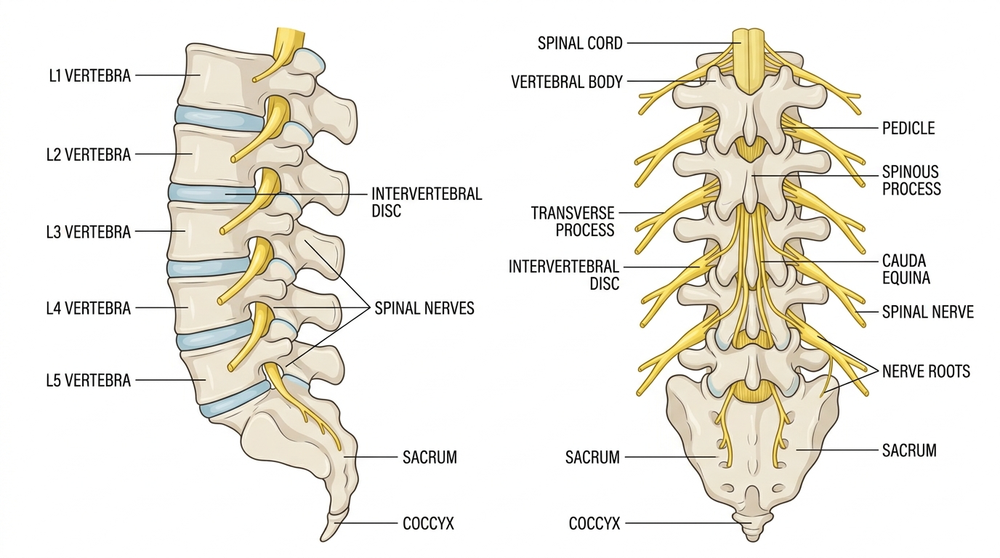

Low Back Pain Assessment

Quick Definitions
Low Back Pain: Pain localized in the lumbar region, often due to mechanical or pathological causes.
Patient Profile
Age, occupation, lifestyle, activity level
Subjective Assessment (History Taking)
- Chief complaint
- Onset and duration of pain
- Pain type (sharp/dull/radiating)
- Aggravating and relieving factors
- History of trauma
- Past medical history
- Red flag symptoms
Objective Assessment
- Observation (posture, gait)
- Palpation (tenderness, muscle spasm)
- Range of Motion (Active & Passive)
- Muscle strength testing
- Neurological examination
- Special tests (e.g., Straight Leg Raise)
Step-wise Clinical Assessment (Physiotherapy Approach)
- Introduction & Consent: Explain procedure and take consent.
- History Taking: Ask about symptoms, pain behavior, and functional limitations.
- Screen Red Flags: Trauma, fever, weight loss, neurological signs.
- Observation: Assess posture, spinal curvature, and gait.
- Palpation: Identify tenderness, tightness, or spasms.
- ROM Assessment: Check lumbar movements (flexion, extension, side bending).
- Neurological Exam: Reflexes, sensation, muscle strength.
- Special Tests: Perform SLR or other relevant tests.
- Clinical Reasoning: Interpret findings logically.
- Physiotherapy Diagnosis: Mechanical LBP / Disc / Muscle issue.
🧠 Clinical Reasoning
If pain radiates to leg → nerve involvement
If localized pain → muscle strain
If pain increases on flexion → disc involvement
If pain increases on extension → facet joint issue
Clinical Decision Flow
Patient presents with pain → Check trauma?
↓
Yes → Rule out fracture 🚨
No → Check radiation
↓
Radiating pain → Nerve involvement
Local pain → Muscle involvement
↓
Check movement restriction
↓
Flexion pain → Disc issue
Extension pain → Facet issue
Differential Diagnosis
- Disc prolapse
- Muscle strain
- Facet joint dysfunction
Red Flags 🚨
- Loss of bladder/bowel control (Cauda equina)
- Severe trauma
- Unexplained weight loss
- Night pain not relieved by rest
Viva Questions
- What are common causes of low back pain?
- What is Straight Leg Raise test?
- What are red flags in low back pain?
- Difference between disc and muscle pain?
Key Points for Exam 📌
- Always check red flags first
- Differentiate radiating vs local pain
- ROM helps identify affected structure
- SLR test is important for nerve involvement
Common Mistakes ⚠️
- Skipping subjective assessment
- Ignoring red flag symptoms
- Not checking neurological signs
- Directly jumping to treatment
Comparison 🔍
| Condition |
Main Feature |
| Mechanical Back Pain |
Localized pain |
| Disc Prolapse |
Radiating pain |
Case Example 🧾
35-year-old office worker complained of low back pain
worsening after prolonged sitting. Pain was localized without radiation.
Postural assessment showed poor sitting posture, indicating mechanical back pain.
Clinical Pearls 💡
- Radiating pain suggests nerve involvement
- SLR test helps identify disc issues
- Posture plays major role in chronic pain
Quick Revision ⚡
Localized pain → Mechanical
Radiating pain → Nerve involvement
SLR Test → Positive in disc
Posture → Important factor
References 📚
- David J. Magee – Orthopedic Physical Assessment
- McKenzie – Mechanical Diagnosis and Therapy (MDT)
- Kisner & Colby – Therapeutic Exercise
- O'Sullivan – Physical Rehabilitation